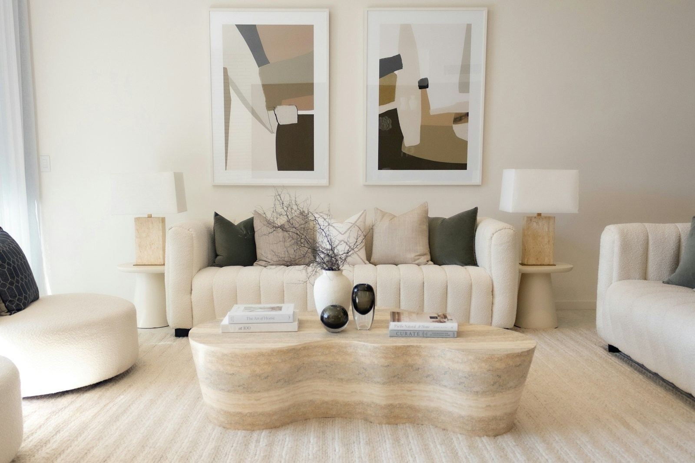
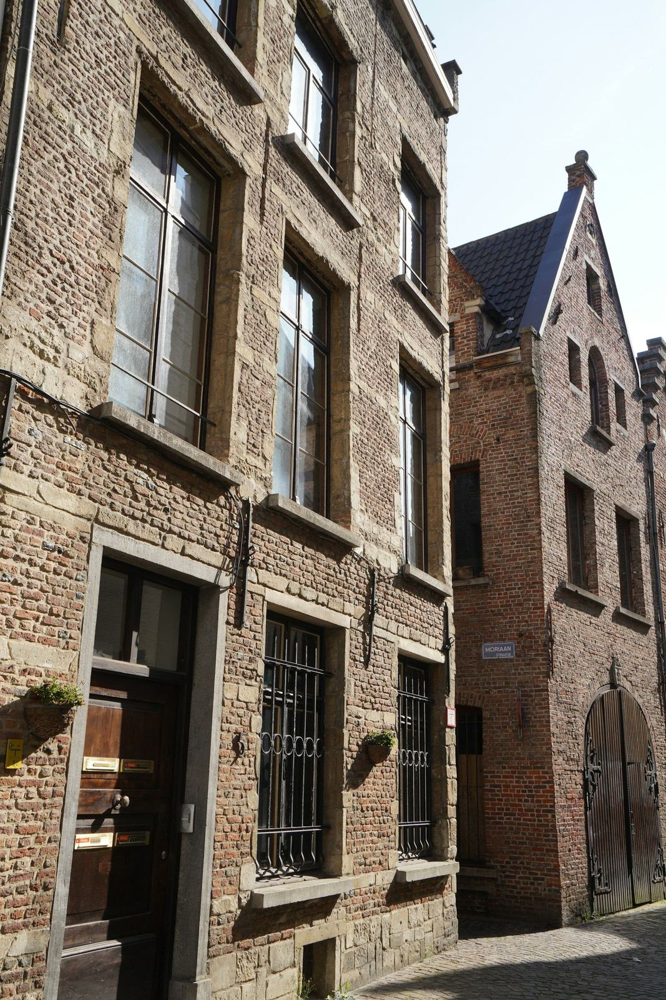
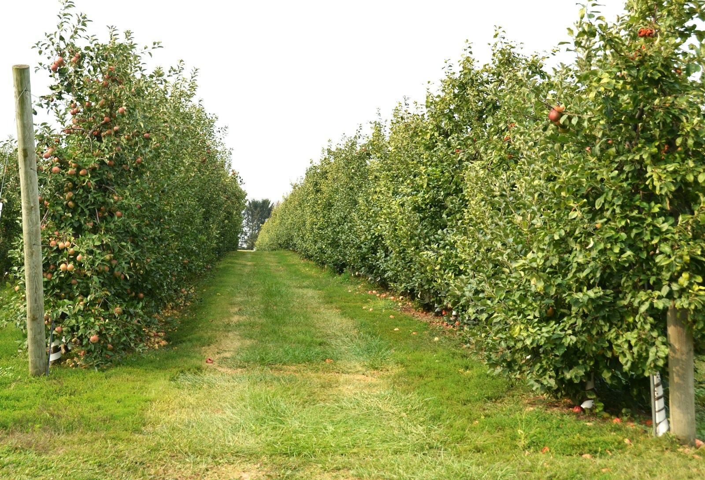

Gegrond in vastgoed
Hier begint
thuis.
Wij vertrekken niet bij een woning, maar bij een mens. Bij wie je bent, hoe je wil wonen en welk hoofdstuk er nu openligt. De woning volgt daarna vanzelf.
Over TÈRRO
Een woning verkoop je één keer. Een thuis draag je mee.
TÈRRO is geen klassiek vastgoedkantoor. Geen haastige bezichtigingen, geen zoekertjes aan de lopende band. Wel de tijd nemen om te begrijpen waarom je verhuist, wat je achterlaat en waar je naartoe wil.
Dat vraagt geduld. Het levert rustigere beslissingen op — en dossiers die ook maanden later nog kloppen.
Lees het volledige verhaalOnze begeleiding
Drie momenten, van eerste gesprek tot SEALED.
01
Kennismaking
Aan tafel, zonder verkooppraat. We luisteren naar je verhaal, je timing en je twijfels. Pas daarna kijken we naar cijfers.
02
Voorbereiding
Waardescan, fotografie, styling en dossieropbouw. Alles ligt klaar vóór de eerste bezichtiging, zodat niets je later inhaalt.
03
SEALED
Onderhandeling, compromis en notaris. Wij blijven aan boord tot de sleutel effectief van hand wisselt.
Aanbod
Een beperkt aanbod, met aandacht gekozen.

Waardescan
Wat is je woning vandaag écht waard?
Geen automatische schatting uit een databank, maar een onderbouwde waardebepaling na een bezoek ter plaatse. Je krijgt het rapport op papier, met uitleg bij elk cijfer — ook als je voorlopig nog niet verkoopt.
Vraag je waardescan aanVerhalen
De mensen achter de muren.
Elke woning die wij begeleiden heeft een voorgeschiedenis. Dit zijn er een paar.
Woonprofiel
Laat ons weten hoe je wil wonen.
Geen algemene mailing bij elk nieuw zoekertje. Wij leggen jouw woonprofiel naast wat binnenkomt — en nemen alleen contact op wanneer het klopt.
Maak jouw woonprofielAanbod
Aanbod
Wij werken met een bewust klein aanbod. Elk pand krijgt de voorbereiding, de fotografie en de tijd die het verdient.
Er zijn op dit moment geen panden in deze selectie. Laat je woonprofiel achter en wij brengen je op de hoogte zodra er iets binnenkomt.
Over TÈRRO
Vertel ons jouw verhaal.
TÈRRO ontstond uit een eenvoudige vaststelling: in vastgoed gaat het bijna altijd over vierkante meters, en bijna nooit over mensen. Wij draaien dat om.
De grond onder alles.
Een woning verkopen of kopen is zelden een louter financiële beslissing. Er gaat een scheiding aan vooraf, of een geboorte, een erfenis, een nieuwe job, of gewoon het besef dat het huis niet meer past bij het leven dat je vandaag leidt.
Die context bepaalt alles: het tempo, de prijs, de manier waarop we communiceren. Daarom begint elk dossier bij TÈRRO met luisteren, niet met meten.
Gegrond in vastgoed betekent voor ons twee dingen tegelijk. Kennis van grond en gebouw — en stevig staan in wat we beloven.
Waar wij op staan
Vertrouwen
Wat we in het eerste gesprek zeggen, geldt ook bij het compromis.
Menselijkheid
Een dossier is nooit alleen een dossier. Er zit altijd iemand achter.
Kwaliteit
Liever één pand goed voorbereid dan vijf haastig online gezet.
Eerlijk advies
Ook wanneer dat betekent dat we je aanraden nog niet te verkopen.
Persoonlijke begeleiding
Eén vast aanspreekpunt, van kennismaking tot sleuteloverdracht.
Onze begeleiding
Hoe een traject bij ons verloopt.
Geen standaardpakket. Wel een vaste ruggengraat, zodat je altijd weet waar je staat.
01
Kennismaking
We komen langs, drinken koffie en stellen vooral vragen. Wat is de aanleiding? Wat is je timing? Wat mag zeker niet gebeuren? Dit gesprek is vrijblijvend en kost je niets.
02
Voorbereiding
Waardescan, alle attesten, professionele fotografie en waar nodig styling. We gaan pas online wanneer het dossier volledig is — dat scheelt later weken discussie.
03
SEALED
Wij voeren de onderhandeling, stellen het compromis op en begeleiden je tot bij de notaris. Pas wanneer de akte is verleden, is het dossier voor ons afgesloten.
Verhalen
Verhalen
Wie woonde hier voor jou? En wie woont hier straks? Gesprekken met de mensen die wij begeleidden, over verhuizen, loslaten en opnieuw beginnen.
Waardescan
Waardescan
Een onderbouwde waardebepaling na een bezoek ter plaatse — geen algoritme dat je postcode opzoekt.
We bekijken de staat van het gebouw, de ligging, de vergunningen en wat er in jouw straat effectief verkocht is. Je krijgt een rapport met een realistische vork en uitleg bij elk cijfer. Vrijblijvend, ook als je nog twijfelt of je wil verkopen.

Woonprofiel
Maak jouw woonprofiel
Vertel ons hoe je wil wonen. Wij leggen jouw profiel naast elk pand dat binnenkomt.
Je krijgt van ons geen automatische mail bij elk nieuw zoekertje. We nemen contact op wanneer er iets is dat écht bij je past — soms nog voor het online staat.

Contact
Vertel ons jouw verhaal.
Bel gerust, of laat hieronder iets achter. Een eerste gesprek is vrijblijvend en kost je niets dan een uur koffie.